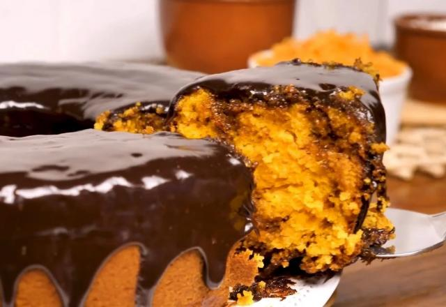

Bolo de Cenoura

Fácil de fazer: Não é um doce complicado. Com poucos ingredientes e em pouco tempo, você pode preparar uma sobremesa saborosa e que vai deixar todos maravilhados.
A simplicidade é um charme! trazendo aquele momento de união, um bolo de cenoura sempre tem o poder de reunir a família em torno da mesa. Vai ser o ponto alto da refeição, o que vai deixar todo mundo ainda mais feliz e satisfeito.
Clique aqui para descobrir a receita Encontre as próximas receitas aqui